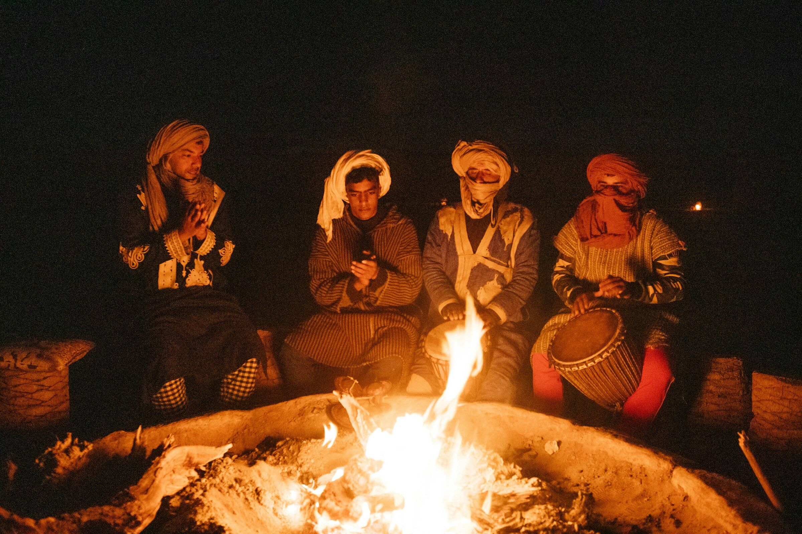

Sales Kickoff Ideas That Actually Energise the Team
Sales kickoff ideas for themes, agendas, venues, awards and activities, plus how to run an SKO abroad for 30 to 500 people without the stress.

A sales kickoff (SKO) sets the tone for the whole year. Done well, the team leaves with clear targets, new skills and real momentum. Done badly, it's two days of slides in a windowless room. Here are ideas to make yours count.
Start with three outcomes
Every session should serve one of these:
- Clarity: targets, territories, compensation and strategy.
- Capability: product updates, skills training, new playbooks.
- Energy: recognition, connection and celebration.
Agenda ideas
- A strong opening. A customer story, a live demo or a short, sharp keynote, not a 60-slide deck.
- Short plenaries, more breakouts. Keep main-stage sessions to 30 to 40 minutes.
- Peer learning. Top performers share what worked, in small groups.
- Role-play sessions on real objections.
- Customer panel. Nothing motivates like hearing customers explain why they buy.
- Awards dinner with real recognition, not just trophies.
Themes that work
- "Basecamp": the year as an expedition, with milestones and a final summit.
- "Level up": a gamified kickoff with points earned across sessions.
- "Home of the customer": every session anchored in customer stories.
Take the kickoff abroad
A kickoff in a new city adds energy that a hotel near the office can't match. Cities with big venues and easy flights work best: Lisbon, Barcelona, Athens, Seville or Kraków for value.
January and February kickoffs in southern Europe come with milder weather and lower prices. See our winter destinations guide.
Activities for large groups
- City-wide treasure hunt in teams of eight.
- Sailing regatta for groups up to 100.
- Cooking competition with chefs as judges.
- Beach olympics or a sports afternoon.
More ideas in our team-building activities library.
Logistics for 100+ people
- Flights: with sales teams spread across regions, coordinated arrivals are essential. We book every participant's flight from their own city.
- Venue: one plenary room, several breakout rooms and a dinner space within walking distance.
- Transfers: staggered coaches by arrival wave.
- Support: one contact reachable 24/7 during the event.
Budget
For two to three nights in a European city with flights, kickoffs typically land between €1,000 and €2,000 per person depending on the venue and evening programme. Estimate yours with our budget calculator.
Plan your kickoff
See our sales kickoff format, or talk to our expert to receive 3 proposals, flights included.
Frequently asked questions
When should a sales kickoff take place?
Usually in January or early February, so the team starts the year with clear targets and energy.
How long should a sales kickoff be?
Two to three days is typical: one day of strategy and plenaries, one day of training and breakouts, with an awards dinner in between.
What is a good venue for a sales kickoff abroad?
A city with direct flights from your sales hubs and a hotel with one large plenary room plus breakout rooms, such as Lisbon, Barcelona or Athens.
Let's plan your team's next retreat
Venue, programme, activities and every participant's flight, handled by one team. It starts with a call with our expert.
Keep reading
All articlesCompany Offsite vs Retreat vs Seminar: What's the Difference?
Offsite, retreat, seminar, kickoff, incentive: what each term really means, when to use which format, and how to choose for your team.

Incentive Trip Ideas: How to Reward Your Top Performers
Incentive trip ideas that people remember: destinations, experiences, surprises and how to structure a reward trip for 10 to 100 top performers.

The Best Winter Offsite Destinations in Europe
Where to hold a company retreat in winter: mild-weather escapes in southern Europe and Morocco, snowy mountain lodges and festive cities, with tips on dates.